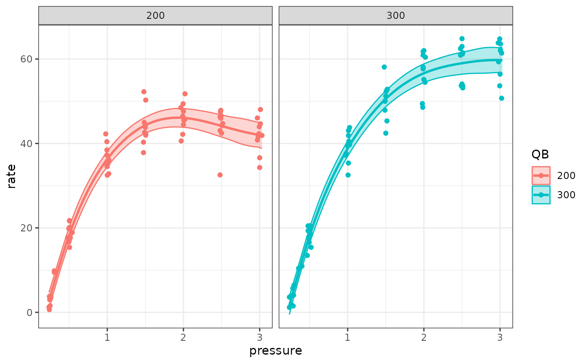
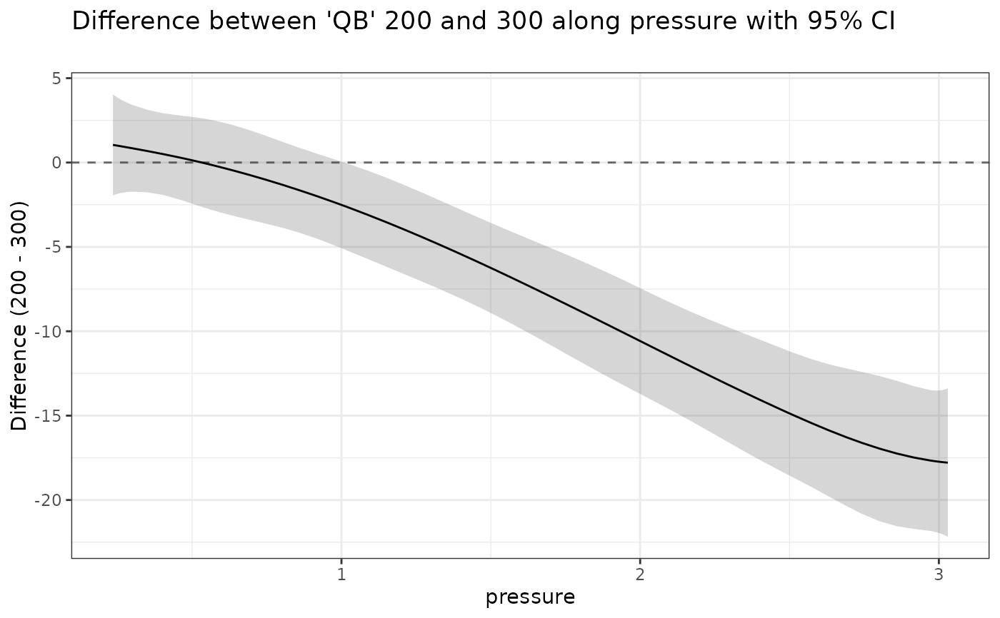
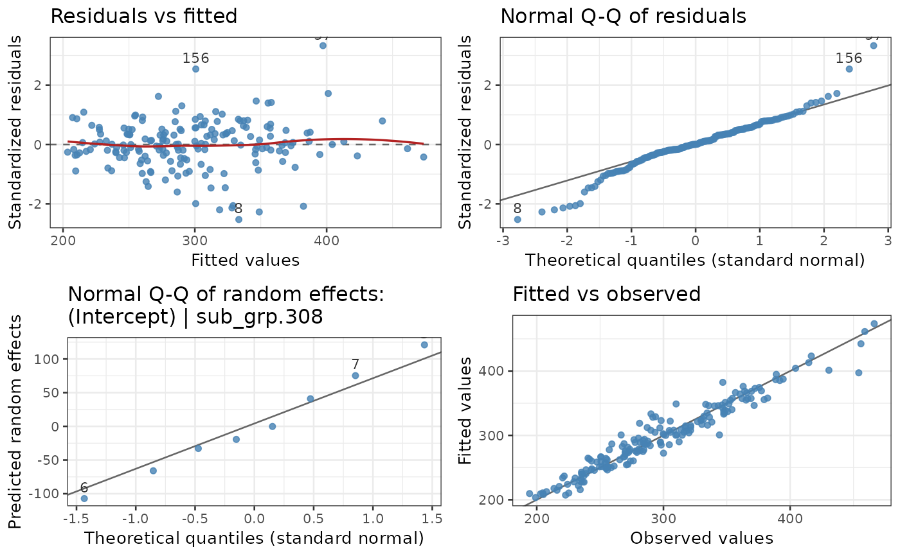
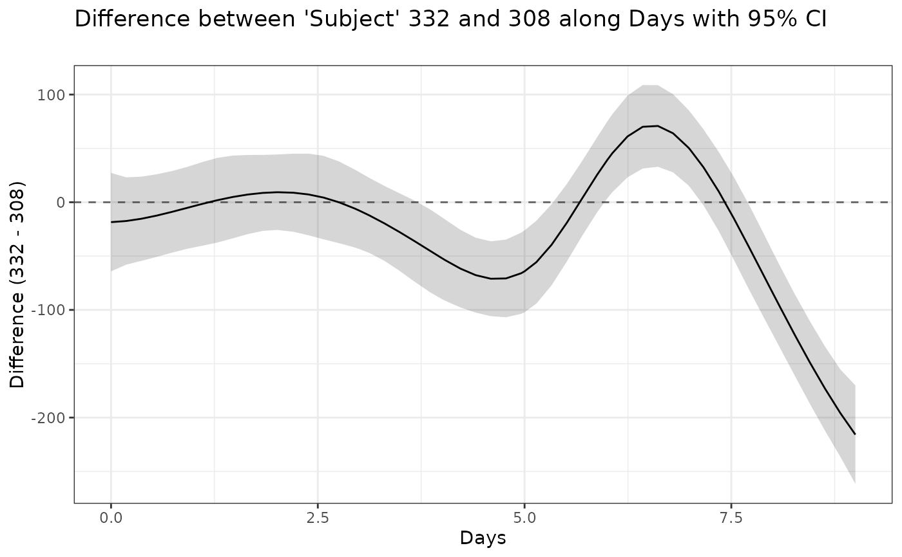
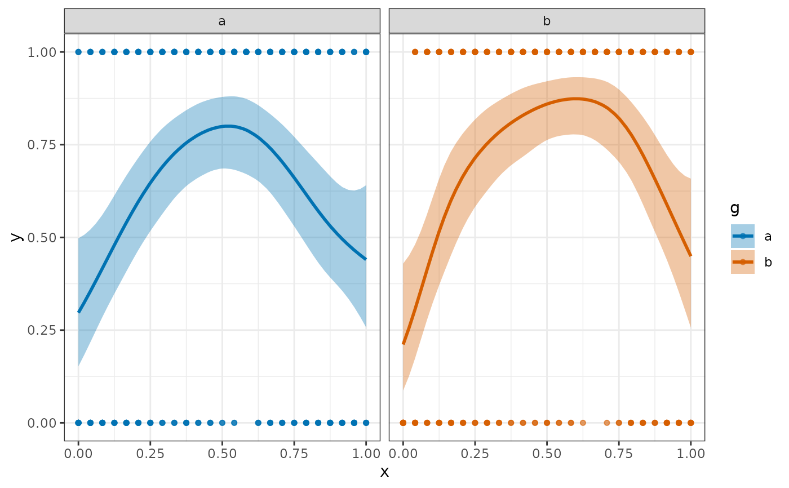

Predicted Means of a Semi Paramatric Model with Covariate Variable(s)
Source:R/semipred.R
semipred.RdThis function produces predicted means with graph for a semi paramatric model with new set of covariate values.
Usage
semipred(semireg, modelterm=NULL, covariate, sm_term=NULL, contr=NULL,
covariateV=NULL, boundary=NULL, level=0.05, trans=NULL, trellis=TRUE,
scales=c("fixed", "free", "free_x", "free_y"),
plotord=NULL, ci=TRUE, point=TRUE, jitterv=0, threeD=FALSE, prt=TRUE,
simultaneous=FALSE, contr_scale=c("model", "response"),
band=c("pointwise", "simultaneous"),
unconditional=getOption("predictmeans.semi_unconditional"), deriv=0, plot_args=list(),
mean_type=c("conditional", "overall"))Arguments
- semireg
A list object returned by
semireg.- modelterm
Name (in "quotes") for indicating which factor term's predicted mean to be calculated. The
modeltermmust be given exactly as it appears insemiregmodel, e.g. "A" or "A:B". In casemodeltermis the same ascovariateorNULL, themsemipredwill product predictmeans with CI based oncovariateonly with out any grouping. Factors that are not inmodelterm, includingbyfactors of the smooth terms, are averaged over with equal weights, in both the parametric and the smooth parts of the model.- covariate
Name (in "quotes") of one or two (for
Ztpssmooth) the covariate variables in thesemiregshuch as "x1" or c("x1", "x2").- sm_term
Names (in "quotes") of smooth terms (from
smoothZlist insemiregmodel) used in the prediction such as "sm1_grp" or c("sm1_grp", "sm2_grp"). The default is using all smooth terms which issm_term=NULL.- contr
A numeric (or character) vector with length of two (e.g. c(4, 1) or c("d", "a")) which indicates to produce predicted mean with CI for difference between
modeltermlevel 4 ("d") vs level 1 ("a") alongcovariate.- covariateV
A numeric vector (one covariate) or a matrix with one named column per covariate (two covariates, e.g. for a
Ztpssmooth), then semipred will produce the result forcovariateat value ofcovariateV. Each row of the matrix is one prediction point.- boundary
For two covariates (a surface): the region where predictions are shown. A matrix or data frame of two columns (the covariates in the order of
covariate), the vertices of a polygon, or of several rings separated by a row ofNA(a point is inside when it is inside an odd number of them: separate pieces and holes), such assemiboundary()returns; orTRUEforsemiboundary()of the model's data (the region the data cover, following their shape).NULL(default): the whole grid.- level
Significance level of the two-sided confidence limits: the default 0.05 gives 95% limits (before version 2.0 the limits used
qnorm(1 - level), i.e. 90%). For gaussian fits the limits are t limits with Satterthwaite df at each point (columndf; see Details); for generalized fits t limits with the df of the design's strata (inner-outer, as for GLMMs), normal limits when the model has no random term besides the smooths.- trans
A function object for calculating the back transformed means, e.g.
trans=exp.- trellis
A logical scalar. If set to TRUE (default), a trellis plots of predicted means with CI will be drawn.
- scales
Should scales be fixed ("fixed", the default), free ("free"), or free in one dimension ("free_x", "free_y") in a trellis graph?
- plotord
A numeric vector specifying the order of plotting for two way interaction (e.g.
plotord = c(2, 1)will put the second variable inmodeltermon theXaxis, the first variable as the grouping variable, and the third one as the panel variable). The defaults arec(1, 2)for two way interactions.- ci
A logical scalar to indicate whether to print confidence interval. The default value is TRUE.
- point
A logical scalar to indicate whether to print raw data points. The default value is TRUE.
- mean_type
Only for
glmmTMBfits with zero inflation (ziformula; ignored, with a message, for other models):"conditional"(default), curves of the means of the count part, \(\mu\);"overall", curves of the overall means \((1 - \pi)\mu\) (\(\pi\) the probability of an extra zero), their bands \(\exp(\log m \mp crit\,SE)\) with the SE of \(\log m\) from the joint covariance of the count and zero-inflation coefficients (delta method), and withcontrthe ratio and the difference of the overall means. Log-link count families only.- plot_args
A named list of colours and sizes for the plots, any of:
lineandband(one curve; dark and light blue),diff_lineanddiff_band(a difference of two curves,contr; dark and light green),ref(the dashed reference line at 0, or 1 for ratios, and the marks under a difference where its band leaves out the reference; red),alpha(of the bands, 0.35),linewidth(1),points,point_alpha,point_size(the data: grey, 0.6, 1.3),palette(curves by group: eight colours that colour-blind readers can tell apart; ggplot2's own beyond eight groups),surface_points(the data on surfaces: red). Bands are drawn first and their lines on top. For exampleplot_args = list(line = "black", band = "grey70"); the plot is a ggplot, so anything else can be added to it.- jitterv
A degree of jitter in x and y direction in the graph. The default is zero.
- threeD
A logical scalar to indicate whether to produce a 3-D plot or not. The default value is FALSE. 3-D plots need package plotly.
- prt
A logical scalar to indicate whether to produce plots on the screen or not. The default value is TRUE.
- band
"pointwise"(the default) or"simultaneous": simultaneous confidence bands over the whole curve(s) instead of pointwise limits; the critical value is the1 - levelquantile of the largest standardised deviation over the predicted points, from 10000 draws of the estimates' distribution (Ruppert, Wand and Carroll, 2003); for gaussian fits a multivariate t with the df of each point (Details). The same argument as incovariatemeans, where lines of a parametric model use Scheffe's critical value instead; for smooths that would be far too wide.- unconditional
If
TRUE, the covariance of the coefficients includes the uncertainty of the smoothing parameters (the variances of the smooth terms), as mgcv'sunconditional = TRUE: the first-order correction \(J V_\theta J'\) is added, \(J\) the derivative of the estimated coefficients in the variance parameters and \(V_\theta\) the covariance of their estimates (from the Hessian of the deviance; forsemireg_tmb()fits TMB's joint precision of all parameters). The default (NULL) isTRUEfor generalized models andFALSEfor gaussian ones: in a simulation of the difference between two curves (dev/sim-curve-difference.R, 150 data sets, nominal 0.95) the bands without it covered 0.93 pointwise and 0.89-0.91 over the whole curve for Poisson and binary data, and 0.955-0.957 and 0.94-0.95 with it; for gaussian data 0.97 without it (0.98 with it).options(predictmeans.semi_unconditional = TRUE)(orFALSE) sets it forsemipred()andpredictmeans()onsemiregfits.- simultaneous
TRUEis the same asband = "simultaneous"(the name before 2.0).- deriv
0(the default): the curves;1: their slopes,2: their curvatures (first and second derivatives alongcovariate, one covariate), with bands as for the curves, and withcontrthe difference of the slopes (curvatures) of two curves. See ‘Slopes and curvature’.- contr_scale
With
contrand a generalized model:"model"(the default) plots the difference on the link scale, as the ratio (log link) or the odds ratio (logit link) of the two curves;"response"the difference of the back-transformed curves with a delta-method band. See ‘Comparing two lines’ incovariatemeans: the test is on the model scale.
Value
- plt
A ggplot object.
- pred_df
A data.frame with the predicted values, their limits
LLandUL,SEanddf; for generalized fits the means and limits are on the response scale (limitsh(eta -+ crit SE)),SEon the link scale andSE_muon the response scale (delta method),dfwhen the limits are t; withcontrthe columns described in Details.
Details
Degrees of freedom (gaussian fits, both engines): a point of a curve, or of a difference of curves, is a
combination of fixed and smooth (random) coefficients. Its df are Satterthwaite's for that combination (as
predictmeans on the fit and SAS for estimates that involve random effects), counting the
variance components of the design (blocks, plots, ...) and the residual; the smoothing parameters are held at
their estimates (their uncertainty is what unconditional adds), and components estimated at zero are left
out. So the df are the residual df when there is no other random term, and few where a design stratum dominates
(curves of treatments applied to whole plots). Pointwise limits use qt(1 - level/2, df) at each point.
Simultaneous bands use a multivariate t: the simulated deviations are divided by variance estimates that move
together over the points (each point with its own df), the points are put on one scale by their t
probabilities, and each point gets the t quantile of its df at the simulated 1 - level quantile (with one
df for all points: the exact multivariate t).
Generalized fits (both engines) take the df that predictmeans gives GLMMs: the inner-outer df of
the stratum of the design's random effects in which the fixed coefficients of a point vary (a curve of a
treatment applied to whole plots: the whole-plot df), the smooth blocks left out (they are not strata of the
design); with no random term besides the smooths, normal limits (as for a glm with a known dispersion).
In a simulation (dev/sim-semireg-glmm-df.R; Poisson counts in the split plot above, 1000 data sets per
setting) normal limits rejected 5.8-9.2% of true equalities of two treatments at a time and covered a
treatment's curve 0.91-0.93, the t limits (10 df) 3.1-5.9% and 0.955-0.970; bands of differences covered
0.92-0.96 (normal) and 0.95-0.996 (t).
In a simulation (dev/sim-semipred-df.R; split plot, 6 blocks, 3 treatments on whole plots, curves over 11
times; 500 data sets per setting) normal limits of a treatment's curve covered 0.91 pointwise and 0.92 over the
whole curve, these t limits (about 8-11 df) 0.94-0.95 and 0.96-0.97; for differences of curves (15-31 df) normal
0.94-0.96, t 0.96-0.97. With curves by group and no design strata both covered 0.95-0.98.
With contr the difference between two curves is computed as in covariatemeans, from the
contrast of the two curves and the covariance of the fixed and smooth coefficients. For a linear model
pred_df has the difference (in the column of the response), LL, UL, SE_contr and
the indicators includes0 (the limits include zero) and significant. For a generalized model it
has the columns of covariatemeans(contr = ): diff, ses, LL, UL and
includes0 on the link scale; the ratio or odds.ratio with its limits and
..includes1; response.diff, response.ses, response.LL, response.UL and
response.includes0 on the response scale; and significant (the link scale). Before 2.0 the band of
a generalized model's difference used the standard error of the link-scale difference multiplied by a weight
evaluated at the difference of the means, which is not a standard error of any difference. The ranges of the
covariate where the curves differ are printed and kept in attr(pred_df, "significant"); with
simultaneous = TRUE they hold for the whole curve, and the curves differ somewhere at level level
when there is such a range. (A joint F test, as covariatemeans() gives, is not given: Wald tests of
penalised smooth coefficients are not reliable.)
Slopes and curvature
With deriv = 1 (2) each row of the prediction design is replaced by its first (second) derivative
along the covariate, by central differences of the whole design (the fixed part and every smooth basis, on the
same grid), so the slopes are those of the fitted curves for any basis; for the O'Sullivan basis (bs = "os",
smZ()) they equal the exact derivatives of the basis, ZOSull(drv = ) (as smZ(drv = )),
to 1e-8. Standard errors, df and pointwise or simultaneous bands are computed as for the curves; generalized
models give the slopes of the linear predictor (link scale). pred_df holds the slopes in the column of the
response, with includes0 and significant; the ranges of the covariate where the band lies above or
below zero (the curve rises or falls) are printed and kept in attr(pred_df, "significant"). A covariate
scaled by semireg(nscale = TRUE) is differentiated in its own units. In a simulation
(dev/sim-semipred-deriv.R; \(y = \sin(x/1.5)\) plus noise, 150 points, 500 data sets) the bands covered
the true slope 0.97 pointwise and over the whole range with the default 6 knots, 0.99-1.00 with 15; the
curvature 0.98-1.00.
Zero inflation (glmmTMB)
For a glmmTMB fit with zero inflation (ziformula) the means are those of the conditional (count)
part, \(\mu\), as emmeans and predict(type = "conditional") give, not the overall mean
\((1 - \pi)\mu\) (\(\pi\) the probability of an extra zero); ratios are of these means, and equal the
ratios of overall means only when \(\pi\) is the same. A message says so and settings$component is
"conditional". The two can order treatments differently when \(\pi\) differs between them.
mean_type = "overall" (predictmeans(), covariatemeans(), semipred()) gives the overall
means and their ratios.
References
Ruppert, D., Wand, M. P. and Carroll, R. J. (2003), Semiparametric Regression, Cambridge University Press.
Examples
library(predictmeans)
data(Dialyzer, package = "nlme")
library(ggplot2)
ggplot(Dialyzer, aes(x = pressure, y = rate, col = QB)) +
geom_line() +
facet_wrap(vars(Subject))
 # a curve per blood flow rate, a random intercept and slope per dialyzer
fm <- semireg(rate ~ s(pressure, by = QB, bs = "os", k = 4) + (pressure | Subject),
data = Dialyzer, prt = FALSE)
residplot(fm$semer, group = "QB")
# a curve per blood flow rate, a random intercept and slope per dialyzer
fm <- semireg(rate ~ s(pressure, by = QB, bs = "os", k = 4) + (pressure | Subject),
data = Dialyzer, prt = FALSE)
residplot(fm$semer, group = "QB")
 anova(fm) # fixed effects (Kenward-Roger) and a test of each smooth term
#> Analysis of Deviance Table (Type III Wald F tests with Kenward-Roger df)
#>
#> Response: rate
#> F Df Df.res Pr(>F)
#> (Intercept) 212.0332 1 19.128 8.354e-12 ***
#> QB 7.4995 1 19.128 0.013 *
#> QB:pressure 850.3842 2 19.129 < 2.2e-16 ***
#> ---
#> Signif. codes: 0 ‘***’ 0.001 ‘**’ 0.01 ‘*’ 0.05 ‘.’ 0.1 ‘ ’ 1
#>
#> Smooth terms: likelihood ratio tests of variance = 0 (the curve is its straight-line part);
#> reference: exact restricted LRT for the only random effect of a gaussian fit, otherwise 0.5 chi2(0) + 0.5 chi2(1)
#> term variance logLik logLik.without LRT p.value
#> s_pressure_QB200 28.92 -355.6 -476.4 241.5 <2e-16
#> s_pressure_QB300 24.53 -355.6 -468.3 225.3 <2e-16
#> test
#> 0.5 chi2(0) + 0.5 chi2(1)
#> 0.5 chi2(0) + 0.5 chi2(1)
# the curves with pointwise bands (t limits with Satterthwaite df), then simultaneous ones
out <- semipred(fm, "QB", "pressure")
anova(fm) # fixed effects (Kenward-Roger) and a test of each smooth term
#> Analysis of Deviance Table (Type III Wald F tests with Kenward-Roger df)
#>
#> Response: rate
#> F Df Df.res Pr(>F)
#> (Intercept) 212.0332 1 19.128 8.354e-12 ***
#> QB 7.4995 1 19.128 0.013 *
#> QB:pressure 850.3842 2 19.129 < 2.2e-16 ***
#> ---
#> Signif. codes: 0 ‘***’ 0.001 ‘**’ 0.01 ‘*’ 0.05 ‘.’ 0.1 ‘ ’ 1
#>
#> Smooth terms: likelihood ratio tests of variance = 0 (the curve is its straight-line part);
#> reference: exact restricted LRT for the only random effect of a gaussian fit, otherwise 0.5 chi2(0) + 0.5 chi2(1)
#> term variance logLik logLik.without LRT p.value
#> s_pressure_QB200 28.92 -355.6 -476.4 241.5 <2e-16
#> s_pressure_QB300 24.53 -355.6 -468.3 225.3 <2e-16
#> test
#> 0.5 chi2(0) + 0.5 chi2(1)
#> 0.5 chi2(0) + 0.5 chi2(1)
# the curves with pointwise bands (t limits with Satterthwaite df), then simultaneous ones
out <- semipred(fm, "QB", "pressure")

head(out$pred_df)
#> QB pressure SE df rate LL UL
#> 1 200 0.235 1.0383074 40.52855 2.720144 0.6224983 4.817789
#> 2 200 0.240 1.0224163 38.62697 3.029839 0.9611684 5.098510
#> 3 200 0.245 1.0080322 36.94778 3.339669 1.2971038 5.382233
#> 4 200 0.250 0.9950291 35.46806 3.649587 1.6305231 5.668651
#> 5 200 0.255 0.9832854 34.16605 3.959550 1.9616315 5.957469
#> 6 200 0.260 0.9726852 33.02154 4.269514 2.2906198 6.248408
semipred(fm, "QB", "pressure", band = "simultaneous")

# at given pressures
semipred(fm, "QB", "pressure", covariateV = c(0.5, 1, 1.5, 2), prt = FALSE)$pred_df
#> QB pressure SE df rate LL UL
#> 1 200 0.5 0.9328556 34.53976 18.27716 16.38246 20.17186
#> 2 200 1.0 0.9244804 36.54632 36.30263 34.42867 38.17659
#> 3 200 1.5 0.9639014 29.53873 44.33622 42.36638 46.30606
#> 4 200 2.0 1.1325886 28.62332 46.05764 43.73991 48.37536
#> 5 300 0.5 0.9226699 33.10338 18.14433 16.26737 20.02130
#> 6 300 1.0 0.9262667 36.79558 38.81293 36.93578 40.69007
#> 7 300 1.5 0.9626107 29.39138 50.58195 48.61432 52.54957
#> 8 300 2.0 1.1303367 28.41027 56.63624 54.32236 58.95013
# the difference of the two curves, and where they differ
dif <- semipred(fm, "QB", "pressure", contr = c("300", "200"), band = "simultaneous")
#> 300 differs from 200 (simultaneous band, level 0.05) for pressure: 1.205 to 3.03 (>).
 attr(dif$pred_df, "significant")
#> from to direction
#> 1 1.204694 3.03 >
# slopes of the curves, and where they differ from zero over the whole range
slp <- semipred(fm, "QB", "pressure", deriv = 1, band = "simultaneous")
#> Slope of rate (simultaneous band, level 0.05): 200: 0.235 to 1.661 (> 0); 300: 0.235 to 2.060 (> 0).
attr(dif$pred_df, "significant")
#> from to direction
#> 1 1.204694 3.03 >
# slopes of the curves, and where they differ from zero over the whole range
slp <- semipred(fm, "QB", "pressure", deriv = 1, band = "simultaneous")
#> Slope of rate (simultaneous band, level 0.05): 200: 0.235 to 1.661 (> 0); 300: 0.235 to 2.060 (> 0).

attr(slp$pred_df, "significant")
#> level from to direction
#> 1 200 0.235 1.661020 > 0
#> 2 300 0.235 2.060306 > 0
# \donttest{
# a surface: copper grade over the plane and a smooth in depth (data(copper))
data(copper)
fcu <- semireg(log(grade) ~ s(zcoord, bs = "os") + s(xcoord, ycoord, bs = "ztps", k = 6),
data = copper, prt = FALSE)
semipred(fcu, covariate = "zcoord", trans = exp, prt = FALSE)$plt
 semipred(fcu, covariate = c("xcoord", "ycoord"), trans = exp, prt = FALSE)$plt
semipred(fcu, covariate = c("xcoord", "ycoord"), trans = exp, prt = FALSE)$plt

# a binary response: the probability scale, and the odds ratio of two curves
set.seed(4)
db <- expand.grid(x = seq(0, 1, length = 25), g = factor(c("a", "b")), cl = factor(1:12))
db$y <- rbinom(nrow(db), 1, plogis(-1 + 2*sin(pi*db$x) + 0.8*(db$g == "b")*db$x +
rnorm(12, 0, 0.5)[db$cl]))
fbin <- semireg(y ~ s(x, by = g, bs = "os", k = 6) + (1 | cl), family = binomial, data = db,
prt = FALSE)
semipred(fbin, "g", "x", prt = FALSE)$plt

head(semipred(fbin, "g", "x", contr = c("b", "a"), prt = FALSE)$pred_df)
#> x diff ses LL UL includes0 odds.ratio
#> 1 0.00000000 -0.45544553 0.6498042 -1.7316787 0.8207876 TRUE 0.6341654
#> 2 0.02040816 -0.33512989 0.5511548 -1.4176131 0.7473533 TRUE 0.7152452
#> 3 0.04081633 -0.22158170 0.4722011 -1.1489976 0.7058342 TRUE 0.8012505
#> 4 0.04166667 -0.21701785 0.4693481 -1.1388304 0.7047947 TRUE 0.8049156
#> 5 0.06122449 -0.11618598 0.4138089 -0.9289181 0.6965461 TRUE 0.8903096
#> 6 0.08163265 -0.02032772 0.3767891 -0.7603519 0.7196965 TRUE 0.9798775
#> odds.ratio.LL odds.ratio.UL odds.ratio.includes1 response.diff response.ses
#> 1 0.1769871 2.272289 TRUE -0.085658253 0.11998578
#> 2 0.2422917 2.111404 TRUE -0.068798133 0.11203980
#> 3 0.3169543 2.025536 TRUE -0.048869676 0.10372380
#> 4 0.3201933 2.023431 TRUE -0.047989164 0.10338662
#> 5 0.3949808 2.006809 TRUE -0.027076246 0.09632543
#> 6 0.4675019 2.053810 TRUE -0.004923197 0.09124626
#> response.LL response.UL response.includes0 significant SE_contr
#> 1 -0.3213136 0.1499971 TRUE FALSE 0.6498042
#> 2 -0.2888474 0.1512511 TRUE FALSE 0.5511548
#> 3 -0.2525861 0.1548467 TRUE FALSE 0.4722011
#> 4 -0.2510433 0.1550650 TRUE FALSE 0.4693481
#> 5 -0.2162620 0.1621095 TRUE FALSE 0.4138089
#> 6 -0.1841334 0.1742870 TRUE FALSE 0.3767891
# }